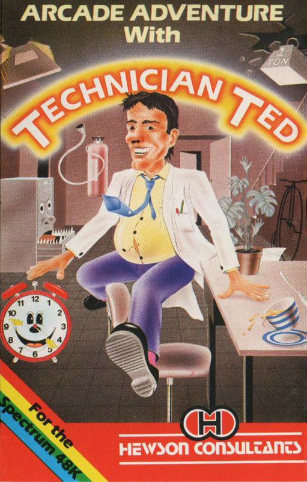
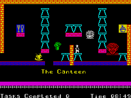
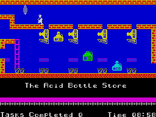

Technician Ted


{kind=link}

| Publisher: | Hewson Consultants |
| Price: | £5.95 |
| Year: | 1985 |
| Source: | CRASH, Issue 13 |

Hewson Consultants have generally steered clear of the more normal type of arcade game, so it comes as something of a surprise to see Technician Ted which is very much an arcade platform game. With their recent history, however, it is no surprise to see that Hewsons have waited until they got their hands on a real strong contender. This is the first ever program from the duo of Steve Marsden and Dave Cooke, who have set their game in the environment they know best, the silicon chip factory.
Technician Ted has to walk around a very large plant collecting chips, while avoiding the numerous hazards. It would be hard not to compare this new game with Manic Miner, which on the surface it resembles. Indeed, there are even sly references in some of the room names. But once into the game it soon becomes apparent that Technician Ted isn’t quite so MMish as one might expect.

For a start off, the chips cannot all be reached, some rooms are impossible to get into, and others contain routes between hazards that look impossible — and are! But the secret lies in how you go about playing the game, and gradually all becomes clearer. There are several levels to the factory, and as in Pyjamarama a lift room allows access to other floors, although holes in the floors and ceilings also link between screens.
An unusual idea is that there are no lives as such but a long purple bar slowly recedes across the screen as you lose a life. As a result you may have between 30 odd and zero lives. Once down to zero the scene cuts to the exterior of the chip factory where Ted gets the boot, literally, from the boss. Scoring is by tasks completed and time, set against a real time clock.
CRITICISM

‘It seems to be a reasonable length of time since a Manic Miner style game has been revamped. Technician Ted has many similar qualities to MM but has been expanded to a large extent with quite a bit more content having been added. Considerable thought must have gone into this program and is definitely not a copy in any sense of the previous success, Manic Miner. You, a lively two character-high sprite graphic, seem to be eager to explore the vast extent of thoughtful, tricky and insensitive maze of hazards (insensitive being, they don’t give a damn)! There have been previous games such as this with many hazards, nice detailed graphics at a good pace, but none have gone quite into such a depth as this, the depth being that there is only one set way and only one correct way of completing the task. And if you’re not going the right way about it, then the solution to the subtasks will not even become apparent. This game has some of the liveliest, detailed and imaginative graphics that I’ve seen to date. Each graphic obstacle has its own characteristics, which makes the game very interesting. Another thing about the game which is quite inspiring is the fact that when a task is done, certain and varied things happen over the maze — obstacles which you may have thought impossible to overcome become physically possible. An interesting and unique feature of this game. This is one game that I can quite easily and willingly state that it must be a game to add to your collection. Truly amazing, truly difficult, truly wonderful.’
‘Technician Ted bears a strong resemblance to both Jet Set Willy and Manic Miner, but the major difference between this and other platform games is that this game needs a lot more thought to complete the screens. The graphics are well up to Hewson’s usual standard, and certainly surpass those seen in JSW and MM. The sound in this game is pretty good too, playing a continuous tune throughout the game (and a different one in the attract mode). Technician Ted is fun to play, offering progressive difficulty in the screens, so every screen is a new challenge to be tackled and overcome. If you become a bit bored with ye olde platform type games this one is certainly worth getting because it offers a real challenge which seems to be lacking in many of today’s platform games. Overall, as a platform game Technician Ted must go down as one of the best games available for the Spectrum and brings back life to the genre which of late have just been copies of Manic Miner. And it is a more original game of the type than any of its predecessors.’
‘The excitement starts straight away with the highly unusual loader, which not only masks the border but also while it is loading there are ranks of Technician Teds marching up and down the screen at the same time. And that’s not all, for the first time ever, a countdown clock to completion of loading. AND, going in the opposite direction of most others these days, the loading rate is slightly SLOWER than normal, thus hopefully ensuring a high rate of loading success. Once loaded, the music breaks out into its full glory (well as much glory as the Spectrum allows), and it is the best since Manic Miner, with two tunes played with a ‘real’ synthesised sound (and equipped with on/off facility if you go mad). The graphics are really wonderful, loads of detail, animation and humour, and the timing routines throughout are perfect, and perfectly hard to beat too. Technician Ted is a platform game, and there’s nothing new in that, but the thought that has gone into this one makes it quite something else. Addictive, delightful to play and a definite must.’
COMMENTS
| Control keys: | Q and O/W and P left/right, bottom row to jump |
| Joystick: | Doesn’t need one |
| Keyboard play: | Simplicity itself, very responsive |
| Use of colour: | Excellent |
| Graphics: | Excellent |
| Sound: | Excellent |
| Skill levels: | Difficult to start, gets progressively worse |
| Lives: | As many as 32, but they go quickly enough |
| Screens: | About 50 |
| General rating: | Excellent, and great value for money. |
| Use of computer: | 93% |
| Graphics: | 96% |
| Playability: | 96% |
| Getting started: | 92% |
| Addictive qualities: | 97% |
| Value for money: | 99% |
| Overall: | 96% |